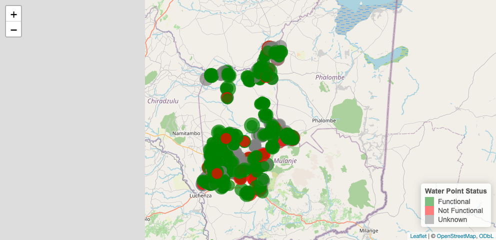
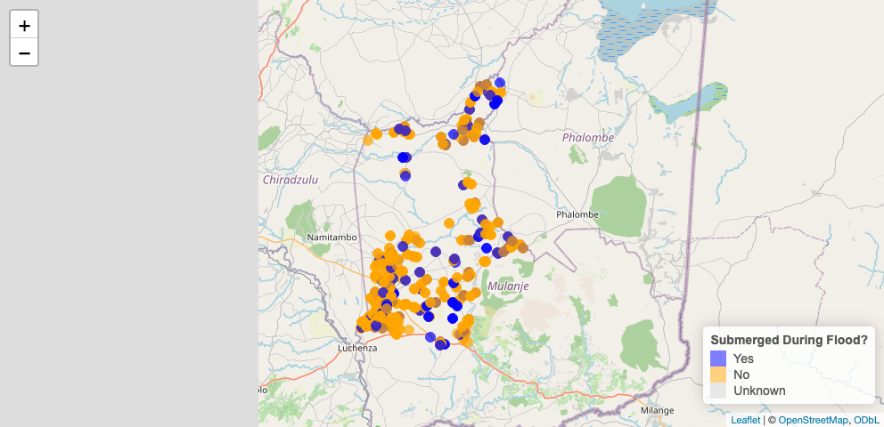

This dataset contains detailed field-level information on the status and functionality of rural water points across Malawi, collected as part of the USAID Flood Response initiative between 2019 and 2020. The data was gathered using the mWater mobile data collection platform, enabling standardized, GPS-tagged assessments directly from field locations.
Each record in the dataset represents a single visit to a water point, capturing both quantitative measurements and qualitative observations. The dataset includes links to photographs, physical infrastructure status, microbiological testing results and site-level comments by enumerators.
Key variables include:
- Location and identity of the water point (GPS coordinates, site name)
- User estimates (number of people served)
- Flood impact indicators (evidence of submersion or erosion)
- Pump and structural functionality (operational status, repair needs)
- Water quality data (e.g., turbidity, arsenic, nitrate, temperature)
- Microbial contamination indicators and associated health risk categories
Use Cases of the Data
This dataset serves as a critical tool for stakeholders involved in water, sanitation, and hygiene (WASH), disaster recovery, and infrastructure management. It supports:
- Emergency response planning – identifying flood-affected and non-functional water points
- Infrastructure rehabilitation – prioritizing repair of pumps, boreholes, and civil works
- Water quality monitoring – detecting contamination risks due to floods or poor maintenance
- Health risk assessments – classifying water points based on microbial and chemical testing
- WASH program design – guiding resource allocation for future interventions
- Research and policy analysis – evaluating resilience and vulnerability of rural water systems
Primary Users of the Dataset
- Government agencies (e.g., Malawi Ministry of Water and Sanitation)
- Donor organizations and NGOs (e.g., USAID, UNICEF, WaterAid)
- WASH engineers and field teams
- Public health professionals
- Disaster response and recovery planners
- Researchers and academics studying water infrastructure, flood resilience, or environmental health
Installation
You can install the development version of floodresponsemw from GitHub with:
# install.packages("devtools")
devtools::install_github("openwashdata/floodresponsemw")
## Run the following code in console if you don't have the packages
## install.packages(c("dplyr", "knitr", "readr", "stringr", "gt", "kableExtra"))
library(dplyr)
library(knitr)
library(readr)
library(stringr)
library(gt)
library(kableExtra)Alternatively, you can download the individual datasets as a CSV or XLSX file from the table below.
- Click Download CSV. A window opens that displays the CSV in your browser.
- Right-click anywhere inside the window and select “Save Page As…”.
- Save the file in a folder of your choice.
| dataset | CSV | XLSX |
|---|---|---|
| floodresponsemw | Download CSV | Download XLSX |
Data
The package provides access to field-level assessment data on rural water point infrastructure in Malawi. It was collected as part of the USAID Flood Response program in 2019 - 2020
floodresponsemw
The dataset floodresponsemw has 684 observations and 45 variables
floodresponsemw |>
head(3) |>
gt::gt() |>
gt::as_raw_html()| submitted_on | water_point_name | latitude | longitude | total_users_of_water_point | water_point_photos | likely_submerged_during_flood | evidence_submerged | evidence_not_submerged | functional_status | pumpable_at_visit | reported_problems | reported_problems_other | water_quality_problems | civil_works_problems | civil_works_photo | pump_problems | pump_problems_other | pump_problems_photo | pump_operational_feel | time_to_pump_20l | strokes_to_yield_water | sediment_presence | electrical_conductivity_magnitude | electrical_conductivity_units | total_dissolved_solids_ppt | ph | fluoride_ppm | ammonia_mg_per_l | nitrate_mg_per_l | free_chlorine_mg_per_l | arsenic_magnitude | arsenic_units | turbidity_magnitude | turbidity_units | temperature_magnitude | temperature_units | temperature_time | comments | sample_type | sample_date | mpn_100ml | upper_95_ci_100ml | health_risk_category | color_change_image |
|---|---|---|---|---|---|---|---|---|---|---|---|---|---|---|---|---|---|---|---|---|---|---|---|---|---|---|---|---|---|---|---|---|---|---|---|---|---|---|---|---|---|---|---|---|
For an overview of the variable names, see the following table.
| variable_name | variable_type | description |
|---|---|---|
| submitted_on | character | Date when the water point assessment form was submitted. |
| water_point_name | character | Name or identifier of the water point site. |
| latitude | numeric | Latitude coordinate of the water point location. |
| longitude | numeric | Longitude coordinate of the water point location. |
| total_users_of_water_point | numeric | Number of people currently using the water point. |
| water_point_photos | character | Photos taken to show the current condition of the water point. |
| likely_submerged_during_flood | character | Whether the water point was likely submerged during recent flooding (Yes or No). |
| evidence_submerged | character | Evidence observed that the water point was submerged. |
| evidence_not_submerged | character | Evidence observed that the water point was not submerged. |
| functional_status | character | Current operational status of the water point. |
| pumpable_at_visit | character | Whether water could be pumped during the visit (Yes or No). |
| reported_problems | character | List of problems reported or observed (e.g., broken parts, contamination). |
| reported_problems_other | character | Additional problem descriptions not in the predefined list. |
| water_quality_problems | character | Specific issues related to water quality (e.g., bad smell, taste, turbidity). |
| civil_works_problems | character | Structural or construction related issues affecting the water point. |
| civil_works_photo | character | Photo documenting the civil works issue. |
| pump_problems | character | Mechanical issues related to the pump (e.g., broken handle). |
| pump_problems_other | character | Additional pump issues not listed in predefined options. |
| pump_problems_photo | character | Photo documenting the pump issue. |
| pump_operational_feel | character | Assessors impression of the pumps functionality during operation. |
| time_to_pump_20l | numeric | Time taken to pump 20 liters of water (in seconds). |
| strokes_to_yield_water | numeric | Number of strokes required to start yielding water. |
| sediment_presence | character | Whether visible sediment was present in the water. |
| electrical_conductivity_magnitude | numeric | Measured electrical conductivity value of the water. |
| electrical_conductivity_units | character | Units used to measure electrical conductivity (e.g., uS/cm). |
| total_dissolved_solids_ppt | numeric | Total dissolved solids in parts per thousand (ppt). |
| ph | numeric | pH level of the water sample. |
| fluoride_ppm | numeric | Fluoride concentration in parts per million (ppm). |
| ammonia_mg_per_l | numeric | Ammonia concentration in milligrams per liter (mg/L). |
| nitrate_mg_per_l | numeric | Nitrate concentration in milligrams per liter (mg/L). |
| free_chlorine_mg_per_l | numeric | Free chlorine concentration in milligrams per liter (mg/L). |
| arsenic_magnitude | numeric | Measured value of arsenic in the water. |
| arsenic_units | character | Units used to measure arsenic concentration. |
| turbidity_magnitude | numeric | Turbidity level measured using a turbidity tube. |
| turbidity_units | character | Units used for turbidity measurement (e.g., NTU). |
| temperature_magnitude | numeric | Temperature of the water sample (numeric value). |
| temperature_units | character | Units used for temperature (e.g., degree Celcius). |
| temperature_time | character | Time the temperature was recorded. |
| comments | character | Additional remarks or observations by the enumerator. |
| sample_type | character | Type of water sample collected (e.g., raw, treated). |
| sample_date | character | Date the water sample was taken. |
| mpn_100ml | numeric | Most probable number (MPN) of bacteria per 100 ml of water. |
| upper_95_ci_100ml | numeric | Upper 95 percentage confidence interval of MPN per 100 ml. |
| health_risk_category | character | Risk classification based on MPN results (e.g., low, medium, high). |
| color_change_image | character | Image showing color change in test compartments used for bacterial analysis. |
Data Visualization Example
library(floodresponsemw)
# Required Libraries
library(tidyverse)
library(leaflet)
# Visualization 1: Interactive Water Point Map
# View the spatial distribution, functionality, and usage volume of water points.
# Clean and prepare the data
df_clean <- floodresponsemw %>%
# Filter out records missing coordinates
filter(!is.na(latitude), !is.na(longitude)) %>%
# Assign colors based on functional status
mutate(
status_color = case_when(
functional_status == "Functional" ~ "green",
functional_status == "Not functional" ~ "red",
TRUE ~ "gray" # Unknown or missing status
)
)
# Create an interactive map using leaflet
leaflet(df_clean) %>%
addTiles() %>% # Add default OpenStreetMap tiles
addCircleMarkers(
lng = ~longitude,
lat = ~latitude,
color = ~status_color, # Color by functional status
radius = ~log(total_users_of_water_point + 1) * 2,
stroke = FALSE,
fillOpacity = 0.7,
# Add popups showing basic water point info
popup = ~paste0(
"<b>Water Point:</b> ", water_point_name, "<br>",
"<b>Status:</b> ", functional_status, "<br>",
"<b>Total Users:</b> ", total_users_of_water_point
)
) %>%
# Add a legend for functional status
addLegend(
"bottomright",
colors = c("green", "red", "gray"),
labels = c("Functional", "Not Functional", "Unknown"),
title = "Water Point Status"
)
# Visualization 2: Flood Impact Map
# visually assess how flooding has potentially affected water points
# Add a flood-related color column based on survey results
df_flood <- floodresponsemw %>%
mutate(
flood_color = case_when(
likely_submerged_during_flood == "Yes" ~ "blue",
likely_submerged_during_flood == "No" ~ "orange",
TRUE ~ "lightgray" # For NA or uncertain responses
)
)
# Create a leaflet map for flood impact
leaflet(df_flood) %>%
addTiles() %>% # Use OpenStreetMap base layer
addCircleMarkers(
lng = ~longitude,
lat = ~latitude,
color = ~flood_color, # Color by flood status
radius = 6,
stroke = FALSE,
fillOpacity = 0.7,
# Add popups with flood-related details
popup = ~paste0(
"<b>Water Point:</b> ", water_point_name, "<br>",
"<b>Likely Submerged?:</b> ", likely_submerged_during_flood, "<br>",
"<b>Evidence Submerged:</b> ", evidence_submerged, "<br>",
"<b>Evidence Not Submerged:</b> ", evidence_not_submerged, "<br>",
"<b>Functional Status:</b> ", functional_status
)
) %>%
# Add legend explaining the color codes for flooding
addLegend(
"bottomright",
colors = c("blue", "orange", "lightgray"),
labels = c("Yes", "No", "Unknown"),
title = "Submerged During Flood?"
)
License
Data are available as CC-BY.
Citation
Published by openwashdata, https://openwashdata.org.
Please cite this package using:
citation("floodresponsemw")
#> To cite package 'floodresponsemw' in publications use:
#>
#> Mhango E (2026). "floodresponsemw: Water Point Assessments - USAID
#> Flood Response Malawi 2019-2020." doi:10.5281/zenodo.17432023
#> <https://doi.org/10.5281/zenodo.17432023>.
#> <https://github.com/openwashdata/floodresponsemw>.
#>
#> A BibTeX entry for LaTeX users is
#>
#> @Misc{mhango:2026,
#> title = {floodresponsemw: Water Point Assessments - USAID Flood Response Malawi 2019-2020},
#> author = {Emmanuel Mhango},
#> year = {2026},
#> doi = {10.5281/zenodo.17432023},
#> url = {https://github.com/openwashdata/floodresponsemw},
#> abstract = {Field-level data on rural water point status and functionality across Malawi, collected during the USAID Flood Response initiative (2019-2020). Includes GPS locations, flood impact indicators, pump functionality, water quality measurements, and microbial contamination data from mWater mobile assessments.},
#> keywords = {open data,washdata,water points,flood response,handpumps,water quality,Malawi,flood,floodresponse,waterpoints},
#> version = {0.0.2},
#> }